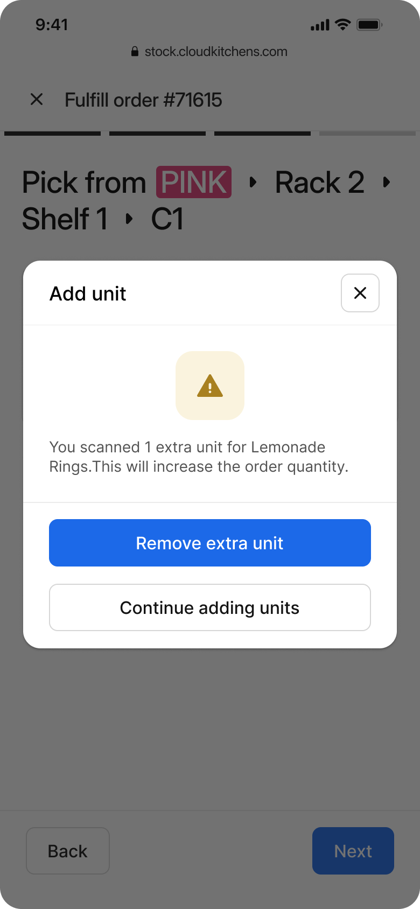

01
Loose workflows
Users had too much freedom in critical tasks, which made it easy to skip steps or improvise around guardrails.
The original system created avoidable mistakes because it asked staff to remember too much, translate digital tasks into physical space, and work linearly in an environment that never is.

Problem
Receiving was not location-based and lacked critical data and status visibility.
Granular statuses let staff mark items as arrived, save progress, and resume later.
QR-coded racks turned receiving into a linear sequence tied to the physical environment.
Expiration details were entered when stock arrived, not retroactively after memory faded.


Problem
Order errors happened when staff relied on memory and inventory was updated after picking.
Users were guided through the correct shelf, rack, and item order before confirming quantities.
Missing or substituted items required a reason so stock updates stayed honest in imperfect scenarios.
Inventory counts were updated at the exact moment the exception happened, not after the run.



Problem
Stocktake was time-consuming and mismatched with staff behavior on the floor.
Staff counted by location using the color-coded system instead of navigating long SKU lists.
Move-inventory and waste flows were built directly into counting so extra workflows disappeared.
Errors were handled in the moment while people were already at the shelf.


Problem
Even after the flow improved, stocktake still depended on staff remembering when and where to do it.
The system generated location-based work automatically, removing setup overhead from the team.
Users simply worked through assigned tasks instead of manually assembling a stocktake session.
Progress was saved so the team could resume without losing state or creating inconsistency.